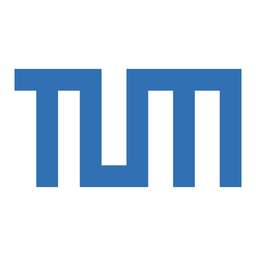
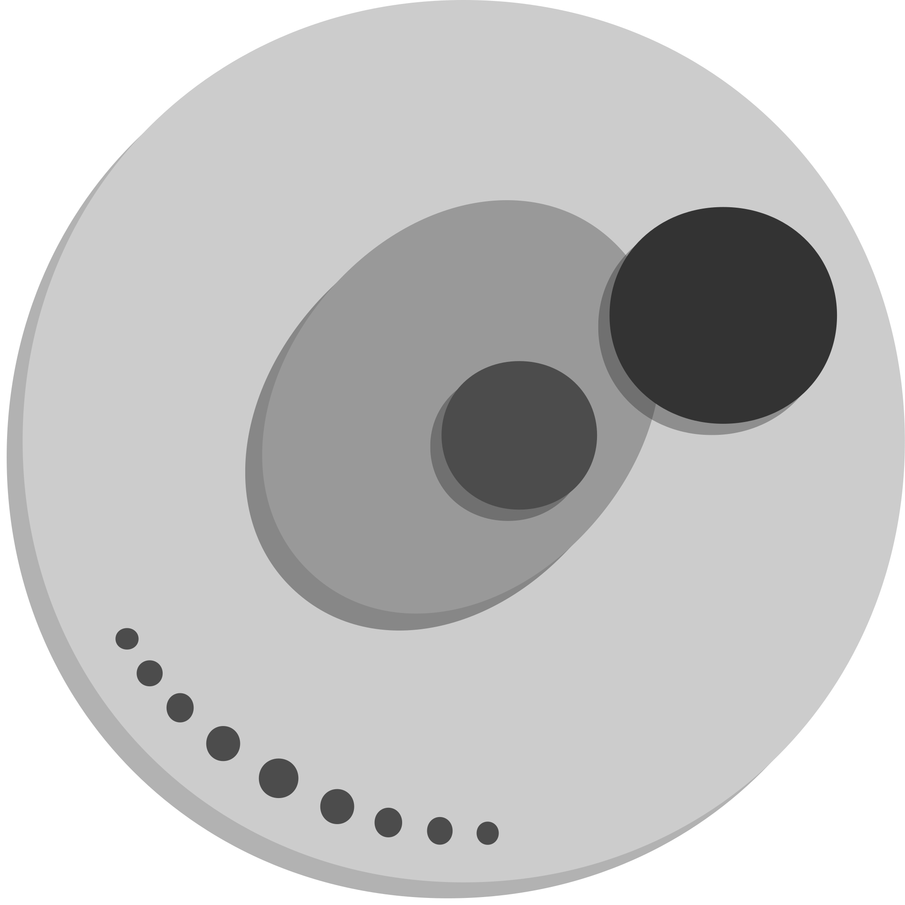
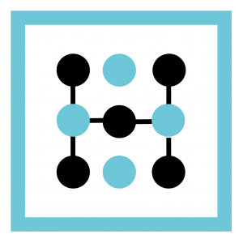
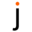
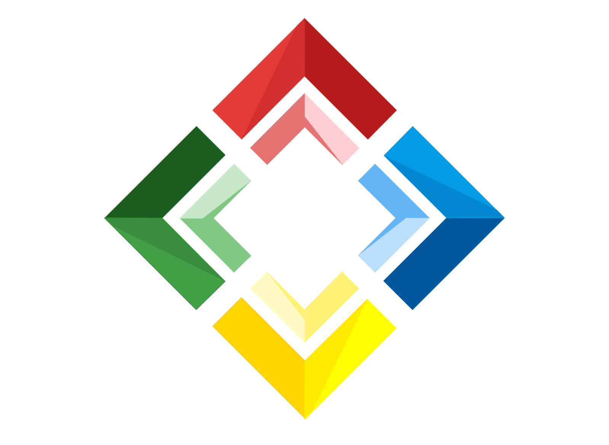

Adrian Castro
Email: me@adct.it
I am an experienced web developer. Although, currently I am pursuing a Master's degree in Data Engineering and Analytics to expand my knowledge in machine learning and artificial intelligence. My objective is to become a professional DevOps that designs, develops and build high performance and highly available applications.
- Education
-

Master's Degree (wip) Munich, Germany, 2019 - CurrentMajor: Data Engineering and Analytics
University: Technische Universität München -
 Bachelor's Degree
Milan, Italy, 2016 - 2019
Bachelor's Degree
Milan, Italy, 2016 - 2019Field: Computer Science
University: Universita degli Studi di Milano-Bicocca - Skills
-
Linux
Mastering Linux's command line power is no joke.
Website Developer
I can develop fast and reliable full-stack web applications.
- Frontend:
ReactJS,Svelte,Vue,Angular - Backend:
NestJs,NextJs,NodeJs - Other:
SQL,Python,Docker,Payment Systems Integration
C++ Developer
I can also develop fast and reliable libraries in C++.
- Good knowledge of
std - Currently developing a C++ database from scratch
- Basic knowledge of
OpenMPand high performance computing
Machine Learning
Case study analysis and implementation of Deep Learning models, with a focus on CV
- Good knowledge of
Pytorch - Good knowledge of
TensorFlow - Good knowledge of
Keras - Good knowledge of data structures, algorithms and applications of ML
DevOps (wip)
Developer operations skills
- GitLab Ops for automated project management and CI/CD
- Basic Jenkins usage
- Server management
- Basic experience with Distributed Systems (P2P, RabbitMQ, Kafka, APIs)
General Skills
Skills that span more areas at the same time
- Test Driven Development
- Behavior Driven Development
- Domain Driven Design
- Agile Methodology
- Frontend:
- Experience
-

BioDataAnalysis GmbH. Full-Stack / C++ Developer, 2020 - Present- Developed a custom web interface to show microscope data
- Developed backend of several internal applications
- Developed high-performance C++ libraries

Heveloon Ltd. Web Developer, 2020 - Present- Helped designing client's website functionalities
- Developed backend and frontend of AutumnWhispers Ltd

Joleat Technical Co-Founder, 2019 - Present- Helped shaping company's technological goals
- Developed the website from ground-up
UnixMiB Staff Board Member, 2017 - Present
- Helped proposing, organizing and setup of international events
- Actively committed to Open Source community

Bicocca Security Laboratory Junior Partner, 2017 - 2019- Helped coordinating tasks for security research
- Learned about state of the art security standards
Net2Web Srl. Full-Stack Developer, 2017 - Present
- Helped shaping company's technological goals
- Developed the website from ground-up
- Used by 30-40.000 users monthly
- Hobbies
- I love to cook every kind of food and dish. I also enjoy kickboxing and piano, although the latter is more like a dead hobby.
- References
- Available on request